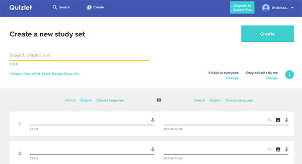
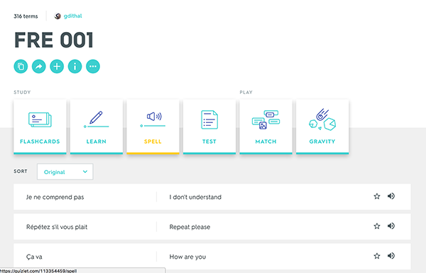

1.30.17
Web-based Form
Quizlet is a study tool that I like to use when I have many terms
that I need to memorize. The website uses forms that allow the user to
fill in the areas with their term and definition. The interface design
itself is very straightforward with rows that have an input area for
the term and it's definition. They list five rows that you can start with
and if you need more, you can simply click on the "+add card" button to
add more rows. Once you are done with inputting data, you hit "create"
and quizlet with make a stack of study cards for you to use.
I like this form because it's appearance is extremely simple so that
I can input my data as quickly as possible. Visual hierarchy is created
through use of color, and headings. Nothing is distracting and the page
is simple to use with appealing animations as you hover through different
elements.

1.11.17
User Interface
The interface that I choose to analyze is GoogleMaps because I have no sense of direction and use the app quite often to find my way around. For a GPS app, it is very important that the interface is simple and easy to use as well as quick because many people use this in their cars. I sometimes find myself needing to adjust the destination and I usually do that at stop lights which means that I don't have much time to fiddle around with different buttons and pathways. I like that the GoogleMaps is simple to enter and exit out of a destination and allows for saved places for quicker navigation. The font is easy to read and the type is large enough to take a quick glance while driving. The map also switches from day to night mode reducing the contrast while driving at night. Compared to other map apps like Apple Maps, Google Maps is the easiest in my opinion to use. The buttons are clear and big enough to press requiring less accuracy compared to small buttons or text. Overall I think the the scale and navigation through the app is optimal and easy to use thus making it ideal for the environment that it is used in.